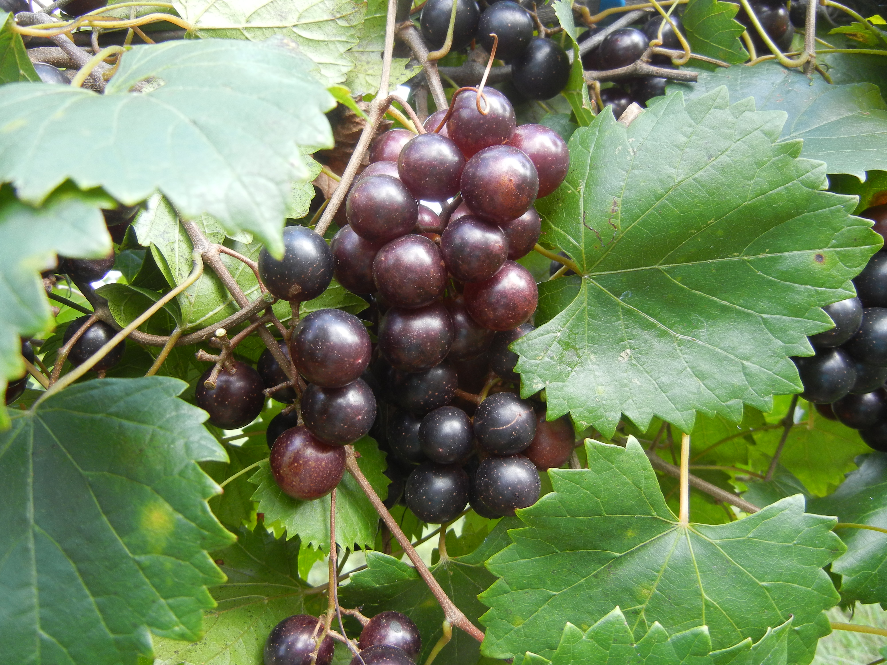
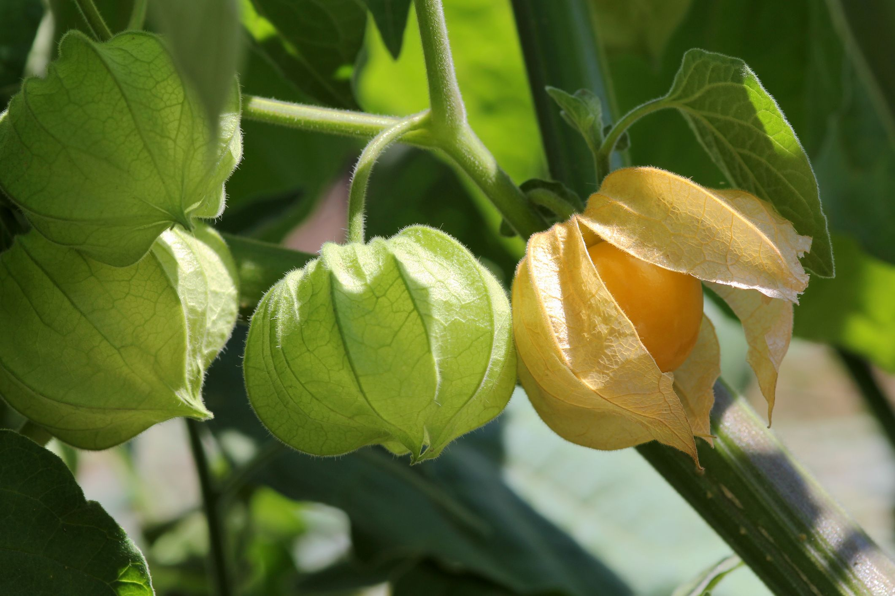

This is a quick guide to help you identify edible berries!
Poisonous Wild Berries
How to tell if a berry is NOT safe to eat:
NOT SAFE:
Berries that are white, yellow, or green
Berries on plants with spines or milky sap
Berries with a bitter or soapy taste
Berries with pink, purple, or black spurs
Berries (or nuts) in pods and bulbs
*To check if the berry is poisionous, put the juice on your forearm, lip, or tongue and see if their is any irriation.
Muscadine (edible)

The vines of these wild grape are commonly found growing on trees in the south. To eat, squeeze the flesh out of the skin!
Ground Cherries (edible)

These bright orange berries are found inside a thin, papery husk. You pop the berry in your mouth and eat it like a cherry tomatoe.
*To check if the fruit is ripe, see if the husk has turned brown and only eat the fruits that have fallen to the ground. Unripe ground cherries can be poisonous!